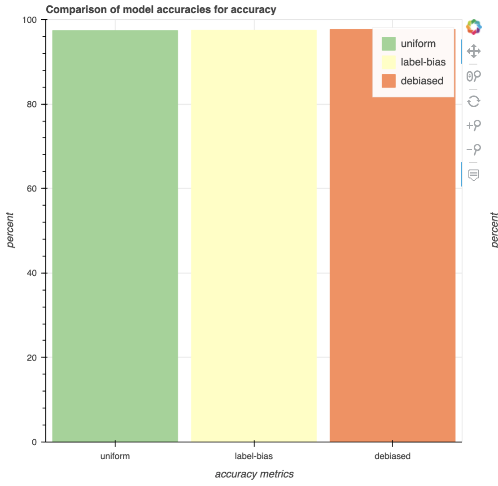

Overall Metrics
This plot can help you gain a better understanding about the distribuition of your data. Such as which classes are under/over-represented.

Label and Feature Metrics
These plots cluster data points based on their extracted feature.

Advanced Metrics